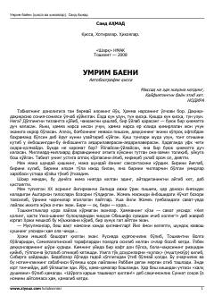

UBTaniqli yozuvchi Said Ahmadning hayotiy xotiralari va ta'sirli qissalari.
Mazkur kitob atoqli o'zbek yozuvchisi Said Ahmadning hayoti va ijodiy yo'liga bag'ishlangan avtobiografik qissa va hikoyalardan iborat. Asarda o'tgan asrning murakkab davrlari, adabiy muhit va taniqli siymolar haqida qiziqarli xotiralar hikoya qilinadi.